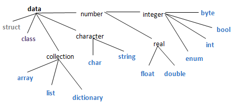
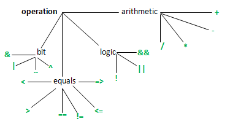
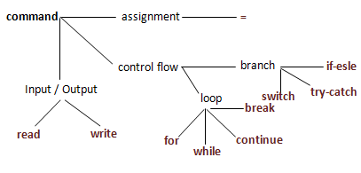
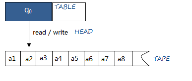

万物皆数。--毕达哥拉斯
万物皆自然数。--阿基米德
万物皆01。--冯诺依曼
楼上说得对。--图灵
说啥？ --梵高
基本数据分为两类：数字(number)和文字(character)，数据结构（data structure）则是指按照一定结构组合起来的一组同类数据。理论上一切计算机数据都是有限长度的二进制自然数。常用基本数据有 bool, int, float和string。 
bool: 布尔值，用于逻辑运算，只有true和false。
byte: 字节，是计算机存取数据的最小单位，它是8位二进制数，如01011001
int: 整数，如1024。
: 有特定名字的整数，如 enum Color{Red, Green, Blue}中的Blue。
float: 浮点数，用于表示小数，如3.1415926。
string: 字符串，如” Turing Alan”。
array: 数组，有序，长度不可变，按下标存取，如 (“Anna”, “Simple”)
list: 列表，有序，长度可变，按下标存取，如 [“Anna”, “Simple”]
dictionary: 字典，无序，长度可变，按关键字存取，如{“Anna”:0925, “Simple”:1024}。
基本运算包括：数运算，逻辑运算，比较运算和位运算。 
+: 加，如10 + 11是21。
-: 减，如10 - 11是-1。
*: 乘，10*11是110。
/: 除，11/10是1，11.0/10则是1.1。
&&: 与，两个运算数同时为真则结果为真，如true && false是false。
||: 或，两个运算数有一个为真则结果为真，如true || false 是 true。
!: 非，取反，如!true是false，!false是true。
<: 小于，如1<2是true。
>: 大于，如 1>2是false。
==: 等于，如 1==1是true。
!=: 不等于，如1!=2是true。
<=: 小于或等于，如 1<=1是true。
>=: 大于或等于，如1>=2是false。
&: 按位与，如01010101 & 10101010是00000000。
|: 按位或，如01010101 | 10101010是11111111。
~: 按位取反，如~01010101是10101010。
^: 按位异或，11001100^11111111是00110011。
基本命令包括：赋值，分支控制，循环控制和I/O。包括这些基本命令的语言是图灵完备的，现代编程语言都是图灵等价的。 
图灵机
